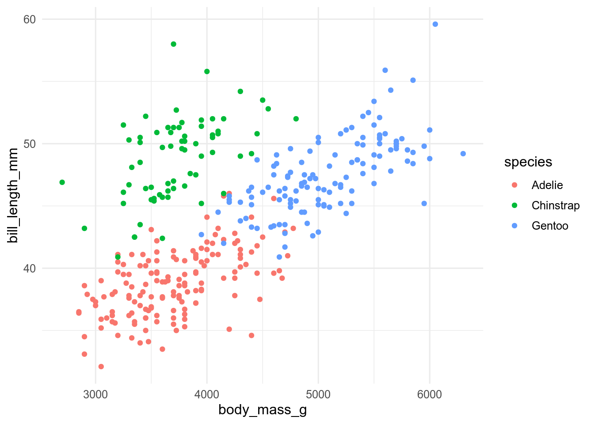

# run this only once
install.packages('tinytex')
tinytex::install_tinytex()3 Elements of an quarto file
In this chapter, you will
- learn the basics of using quarto
3.1 YAML
The YAML is metadata for the document that goes right at the top of the file between two sets of three dashes. The YAML consists of key: values pairs. The colon and space are required. Rstudio will autocomplete the keys.
---
title: "My Manuscript"
format: html
date: 2022-04-03
---The YAML can set the document author and title, the output format and many other things.
White space
YAML is sensitive to white space. For example, you must have the space after the colon.
Today’s date
With the keyword today, you can make the document report the date it was rendered.
---
title: "My Manuscript"
format: html
date: today
---
Exercise
Add date and author keys to the YAML of your svalbard_traits quarto document so it shows today’s date and your name when rendered.
3.1.1 Output formats
Quarto documents can be rendered in about 40 formats! The format can be specified when the quarto file is created in RStudio or by editing the YAML.
Producing an html file to view in a browser is the simplest, as no extra software needs installing. The YAML should look something like this.
---
title: "My Manuscript"
format: html
---Word documents are also easy; just change the format to docx. This can be very useful if you have a supervisor or collaborators who cannot cope with markdown directly.
Rendering the quarto file as a PDF requires some external tools (LaTeX) to be installed (you don’t need to learn any LaTeX). This can be done with the tinytxt package.
Then the format in the YAML can be changed to pdf. With PDF documents, it can be tricky to control exactly where the figures are positioned, so I recommend working with html as long as possible.
Quarto, PDF and LaTeX
Quarto uses LaTeX to make PDFs. You don’t need to know any LaTeX, but you can include some if you want to change the formatting etc. For example, you force a new page, you could use the command.
\\newpage
Coauthoring with quarto
Perhaps the best way to collaborate with coauthors on a quarto document is to use version control for example with GitHub.
An alternative is to use the trackdown package to upload markdown files to Google Drive where they can be edited and then downloaded again.
Comments
A comment in an R code block starts with a #, just as in an ordinary R script.
A comment in the text is enclosed an html comment mark
<!-- This is a comment -->Type Ctrl + Shift + C (⌘ + Shift + C) to get this comment mark.
In the source editor, you can select text you want to hide and use this keyboard short-cut to comment it out.
3.2 Text
Type to make text! In the visual editor, you can format the text in much the same way you would work in MS word or LibreOffice. RStudio has a built-in spell checker that will underline words it doesn’t recognise in red.
3.2.1 Source editor
Sometimes it is useful to be able to write in markdown directly, rather than using the visual editor, for example if you are writing a question for stackoverflow.com or an issue on github.com. You can see this mode by clicking on “Source” above the document
Paragraphs have a blank line between them. It is good practice to write one sentence per line. The extra line breaks will be removed when the document in knitted. If you want to force a line break, put two spaces at the end of the line.
Formatting is generated with some special characters. For example:
| Markdown Syntax | Output |
|---|---|
|
4 Header 1 |
|
4.1 Header 2 |
|
4.1.1 Header 3 |
| *italics* and **bold** | italics and bold |
| superscript m^2^ | superscript m2 |
| subscript CO~2~ | subscript CO2 |
| `verbatim code` | verbatim code |
Escaping characters
If you actually want a *_^~ in the text, you need to escape it by putting a backslash \ before it, e.g. \*.
A more complete list of formatting is given in the R markdown cheat sheet, and in the quarto documentation.
Vil du skrive på norsk
Vil du har Dato i stedet for Date, og Figur frem for Figure? Se denne siden om hvordan man kan oversette disse ordene i quarto.
You can change the spell checker language for the current project from the RStudio menu with
You can also change the global options to change the language for all projects.
Exercise
The Results section of the svalbard_traits document should be in Header 1 style, and species names should be in italics. Fix this and render the document to check the formatting has worked.
4.2 Code blocks
Code in an quarto document is contained in code blocks.
This is a code chunk that loads the penguin data from the palmerpenguins package.
```{r}
data(penguins, package = "palmerpenguins")
```It starts with three back-ticks, followed by braces. Inside the braces, the “r” indicates that this block is in the R language. Next, on a new line, is the body of the code block. The block ends with three back-ticks on their own line. In the visual editor, you won’t see the back-ticks, but the code block will start with {r} and have a grey background.

4.2.1 Making a block
You can type the back-ticks and braces needed to make a block, but, when using the visual editor, it is easier to get RStudio to insert the block with the insert tool. Type a forwards slash / on a blank line and choose “R code chunk”. You can also use the keyboard shortcut Ctrl + Alt + i.
4.2.2 Block language
We will just work with R code blocks, but it is possible to run block in other languages, including Python and Julia.
Exercise
Make a new code block (or blocks) that make a plot showing the effect of the treatment on leaf thickness.
Hint
You can copy and modify some of the existing code rather than writing from scratch.
4.2.3 Block options
Code block options control how the blocks work and how any output is treated. Options are given in special comments at the top of the block.
```{r}
#| label: penguins-bill-body
#| warning: false
#| fig-cap: "The figure caption"
#| fig-alt: Plot of penguin bill length against body mass by species
library(ggplot2)
ggplot(penguins, aes(x = body_mass_g, y = bill_length_mm, colour = species)) +
geom_point()
```
Options format
The white space in the block options is critical.
If you don’t have the space after the
#|then the option becomes a regular comment and is ignored.If you don’t have a space after the colon, you get “ERROR: Render failed due to invalid YAML.”
true and false are written in lower case (in R they are upper case).
There are lots of block options, but only a few that you will need to use frequently. Here are some and their default.
-
echo(true) Show the chunk’s code in the output. -
eval(true) Run the chunk code. -
include(true) Include the output of the chunk in the document. -
message(true) Include messages from R. -
warning(true) Include warnings from R. -
error(false) Iftrue, includes any error message and carries on. Iffalse, stops knitting when there is an error in R code.
I leave message and warning as true while I am writing the document, so I can see any possible problems, and set them to false when I render the final version.
I sometimes find it useful to set error to true as can make it easier to debug any errors in the code.
Chunk options for figures are shown in Section 4.1.1.
For more options see https://quarto.org/docs/computations/execution-options.html
Exercise
Importing packages produces lots of output that we don’t need to see in the final report. Use block options to hide the output of this block.
The code block making the table is giving a message about the grouping. Use block options to make this message go away.
4.2.4 Setting global block options
Global code block options can be set for all code blocks by including execute with the option in the YAML at the top of the file.
For example, this YAML would set echo to be false for the entire document (options for individual blocks could override this).
---
title: "My Manuscript"
format: html
execute:
echo: false
---
Exercise
Use global block options to stop the code from showing in the report.
4.2.5 Block labels
It is a good idea to give code blocks labels which you can do with the label option. If you don’t, they will automatically be called “unnamed-chunk-n” where “n” is a incrementing number. This is inconvenient for debugging (you need to work out which chunk is “unnamed-chunk-38”) and for working with any image files generated by the document. In section Chapter 6 you will see how to use chunk names to cross-reference figures and tables in your document.
4.2.5.1 Rules for block labels
Block labels should be informative and can contain letters and numbers. Words should be separated by hyphens (“-”).
Special characters in labels
Avoid spaces, underscores, periods and other special characters in code block labels. They will cause all sorts of strange problems.
4.2.6 Running a code block
Code in blocks will be run when the document is rendered (unless eval: false), but it is also useful to run the code interactively to check that it works. You can do this by clicking on the green play buttons at the top-right of the block (Figure 4.2) or from the Run button above the document. If the code depends on previous block, the grey/green icon will run them all.

4.2.7 Hiding a block
If a block has a lot of code, it can be useful to hide it to make it easier to navigate the document. The grey arrow next to the line numbers will do this. Sections of text can also be hidden.
4.2.8 Environments and working directory
R renders quarto documents in a new R session. Initially, no packages are loaded and the environment is empty: the quarto document does not have access to any objects in your current environment (this is a good thing for reproducible analyses). This means that any data or packages you want to use in the document needs to be imported by the code in the document.
The working directory for the new R session used when rendering the quarto file is the directory where the quarto file is. If the file is in the root directory of an RStudio project, relative paths will work the same way in the quarto document as from the console. If the quarto file is in a sub-directory, use here::here() to form paths relative to the project root.
4.3 Inline code
In addition to the output from code blocks, you can insert code directly into text. This lets you avoid copying and pasting numbers from the output. Inline code is enclosed by back-ticks and starts with an r.
Seven times six is `r 7 * 6`Seven times six is 42
In the visual editor, you can make inline code by clicking on the </> icon.
Numbers in words
If you want numbers written as words, for example at the start of a sentence, use the package english.
`r english::Words(7 * 6)` is the answer to seven times six.Forty-two is the answer to seven times six.
It is best to keep inline code short to keep the text readable. One trick is to do all necessary calculations in a previous code block, so only the name of the object with the result needs to be in the inline code. If there are many results to report, consider storing them in a list as in the following example.
# calculate correlation between bill length an body mass for Adelie penguins
cor_adelie <- cor.test(
~ bill_length_mm + body_mass_g,
data = penguins,
subset = species == "Adelie")
adelie_list <- list(
#degrees of freedom
df = cor_adelie$parameter,
# extract correlation and round
est = round(cor_adelie$estimate, 2),
#format p.value with an "=" if the first character is not "<".
#See the characters tutorial for more on the stringr package and regular expressions.
p_val = str_replace(
string = format.pval(cor_adelie$p.value, eps = 0.001),
pattern = "^(?!<)",
replacement = "= ")
)Bill length and body mass in Adelie penguins are positively correlated,
r = `r adelie_list$est` (df = `r adelie_list$df`, p `r adelie_list$p_val`).Bill length and body mass in Adelie penguins are positively correlated, r = 0.55 (df = 149, p < 0.001).
Exercise
Use some inline R code to report the maximum height recorded for Bistorta vivipera.